6 勾股弦幻方组的三种构造方法
这是和梁培基先生合写的文章，把勾股数和幻方联系起来。
引言
勾股弦数组是一个历史悠久的古老数学问题，近代将勾股弦数组代入幻方之中，使得幻方的结果也满足勾股弦数组的定义，颇为有趣。在此之前，国外仅有两篇勾股弦幻方的文章，介绍了两种方法。第一种是“R法”，第二种是“EE法”。第三种是我们本文提供的“LL法”，三种方法各不相同，都可以得到勾股弦幻方组，殊途而同归。
“R法”与“EE法”研究的是k＝2次方勾股弦数组的勾股弦幻方组，而我们则给出了k＝3、4、5次方数组的勾股弦幻方组，拓广了勾股弦幻方组的研究范围。
勾股定理的由来及用途
勾股定理描述了直角三角形三条边之间的关系，我国古代把直角三角形中较短的直角边叫做“勾”，较长的直角边叫做“股”，斜边叫做“弦”。
平面上的直角三角形的两条直角边的长度a，b的平方和等于斜边长c的平方，即勾股定理的公式为a2＋b2＝c2。当a、b、c为正整数时，（a，b，c）叫做勾股数组。
最早发现勾股定理的国家是古巴比伦，在英国博物馆保存的一块泥板上有这样的记载：
“长是4，对角线是5。那么宽是多少？
没人知道。
4乘4是16。
5乘5是25。
你从25里面拿掉16，剩下的是9。
几乘几是9呀？
3乘3是9。
3就是宽。”
这段文字说明古巴比伦人知道当直角三角形的斜边是5，一条直角边是4的时候，另外一条直角边一定是3。
在美国哥伦比亚大学收藏的一块编号为Plimpton322的泥板上记录了很多例子。这是块介乎公元前2000年至公元前1600年的古巴比伦泥板。
泥板上总共有15行符号，分成5列。其中第四列相当于我们的“编号”两个字，第五列从第一行到最后一行依次是从1到15这15个数字。所以说真正有意义的其实只有前3列。第三列是斜边长，第二列是短的直角边长。最令人费解的是第一列，这一列的数字从第一行的0．983 4…逐渐减少到最后一行的0．387 16…。关于这第一列的含义，长期以来争论不休。美国威斯康星大学巴克（R．C．Buck）教授于1980年写了一篇脍炙人口的文章《夏洛克·福尔摩斯在巴比伦》。这篇文章发表在《美国数学月刊》上。巴克在这篇文章里从大侦探福尔摩斯的角度出发来研究这些数字，其结论令人吃惊不已。
原来这一列的数字代表的是短的直角边和长的直角边比值的平方，也就是（a/b）2。如果以θ代表斜边和长的直角边的夹角，那么这第一列数字就是（tanθ）2。更有趣的是这个θ，从第一行开始，几乎是稳定的以1°的速度下降，从大约45°下降到大约30°。所以这个表还有可能是古巴比伦人的三角函数表呢。
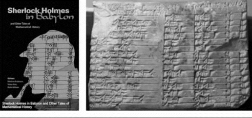
同名图书《夏洛克·福尔摩斯在巴比伦》和巴比伦泥板
巴克认为古巴比伦人不但知道很多勾股数组的例子，而且还知道如何制造勾股数组。也就是说他们知道勾股数组的一般公式：
a＝2mn，
b＝m2－n2，
c＝m2＋n2。
巴克的结论是可信的，因为泥板涉及的最大的一个勾股数组是（18 541，12 709，13 500）。这样的例子是绝对不可能通过测量发现的，也几乎不可能通过凑巧得到。而且18 541还是个素数，也就是说这组数字也不可能是通过较小的勾股数组放大得来。所以我们确实有充分的理由相信古巴比伦人知道一般形式的勾股定理。
正因为如此，2002年1月的《美国数学会通告》的封面登载了YBC 7289泥板的照片。配的文字说明是“比毕达哥拉斯早1 000年的毕达哥拉斯定理”。
约公元前1世纪的《周髀算经》相传勾股定理是商代的商高发现的，全书第一节就记载着一个名叫商高的人，对周公讲了这样一段话：“折矩以为勾广三，股修四，径隅五。既方其外，半之一矩，得成三四五。两矩共长二十有五，是谓积矩。”这段话毫无疑问是在谈论勾股定理，而周公大约生活在公元前11世纪，商高既和周公谈话，当然是周公的同时代人，这就比毕达哥拉斯早了数百年，所以商高理应获得勾股定理的荣誉，故勾股定理又有称为商高定理。此外该书明确记载了周公后人陈子叙述的勾股定理公式：“若求邪至日者，以日下为勾，日高为股，勾股各自乘，并而开方除之，得邪至日。”
勾股定理在法国称为“驴桥定理”，在埃及称为“埃及三角形”。勾股定理在几何学中的实际应用非常广泛。相传大禹在治水过程中，“左准绳，右规矩”（“规”就是圆规，“矩”就是曲尺，由长短两尺在端部相交成直角合成，短尺叫勾，长尺叫股），运用勾股测量术进行测量，表明大禹已经知道用长为3∶4∶5的边构成直角三角形。陈子则利用勾股定理测量太阳高度。
勾股弦定理广泛应用在人民生活各方面，例如：测量土地的面积、测量距离、测量山的高度等。勾股定理把数学由计算与测量技术转变为证明与推理科学。勾股定理中的公式是第一个不定方程，也是最早得出完整解答的不定方程，它一方面引导到各式各样的不定方程，包括著名的费马大定理，也为不定方程的解题程序树立了一个规范的模式。从勾股定理出发开平方、开立方、求圆周率等。
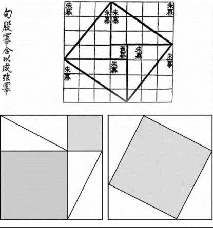
中国古代发现了勾股定理，表述为“勾股各自乘，并之，为弦实。开方除之，即弦”
古希腊的毕达哥拉斯证明了勾股定理。相传毕达哥拉斯证明这个定理后，杀了100头牛作庆祝，故又称“百牛定理”。据有关资料报道，仅勾股定理的证明方法就有500 多种，是数学定理中证明方法最多的定理之一。但他们发现的时间都比中国的晚，中国古人是世界上最早发现勾股定理证明的人。
最早提出构造勾股弦幻方组的学者
希思（Royal Vale Heath，1883—1960）是纽约城经纪人、美国魔术师和数学谜题爱好者，1930年在他的书《数学魔术——数字的魔术、谜题、游戏》（Mathemagic—magic，puzzles，games with numbers，Dover，1953）中发表了一组幻方。
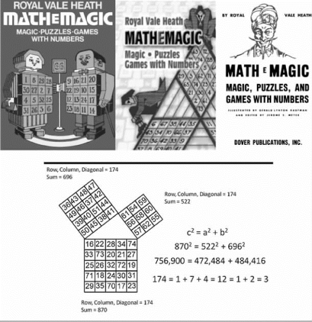
希思介绍幻方的书及书中的一个幻方组
这组幻方分别由3阶、4阶与5阶所组成，奇怪的是，这3个幻方的幻和都相同，都等于174。而3阶幻方幻和的总和是174×3＝522，4阶幻方幻和的总和是174×4＝696，5阶幻方幻和的总和是174×5＝870。 再求平方和，得：5222＋6962＝8702＝272 484＋484 416＝756 900。
这种方法称为“R法”。其特点是，每个阶数不同的幻方，其幻和相等，再求n 个幻和的平方和，使得A2＋B2＝C2，又称为“同幻和，不同阶数法”。
如下图，我们利用“R法”可以得到其幻和较小的3、4、5阶勾股弦幻方组（幻和都等于120）。
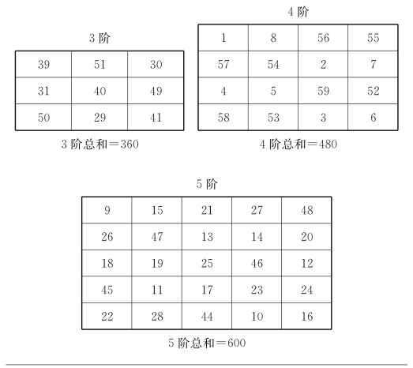
由3、4、5阶幻方，得到：32＋42＝52。即3602＋4802＝6002＝360 000。其中行列幻和、对角线幻和都是120
还可以拓广到广义勾股弦数组及3次幂和数组。在洛书中我们发现两个广义4元素3次勾股弦数组。第1组是A＝3，B＝4，C＝5，D＝6，第2组是A＝1，B＝6，C＝8，D＝9，用这两个数组可以构造出广义勾股弦幻方组，下图是A ＝3，B ＝4，C ＝5，D ＝6的广义勾股弦数组，它们满足：
A3＋B3＋C3＝D3
这4个幻方的幻和都等于240。
A，B，C，D 各个子幻方的总和分别是720，960，1 200，1 440。
计算得7203＋9603＋1 2003＝1 4403，
即：373 248 000＋884 736 000＋1 728 000 000＝2 985 984 000。
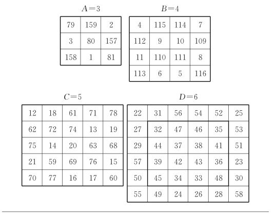
幻和＝240的勾股弦幻方组
下图是利用第二组元素，当A＝1，B＝6，C＝8，D＝9时构造的广义勾股弦幻方组，仍然满足3次方的性质：对于拓广勾股数组1，6，8，9，我们可以造出4个幻方，来满足广义勾股弦幻方组。
设S＝1 080，则（1 080×1）3＋（1 080×6）3＋（1 080×8）3＝（1 080×9）3。
在幻方的阶数1、6、8、9中，第一个“1”代表1阶幻方，其幻和为1 080；其余的6、8、9，分别代表6阶、8阶、9阶幻方。
我们造出的1，6，8，9阶广义勾股弦幻方组如下，1阶省略。
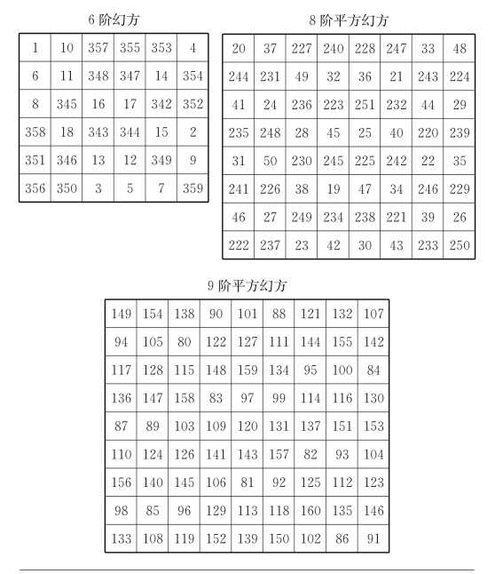
6、8、9阶广义勾股弦幻方
有意思的是，8阶幻方与9阶幻方都具有平方幻方的性质，并且这两个幻方的1次幻和相等，即S8＝S9＝1 080。但是它们的2次幻和就分道扬镳了：
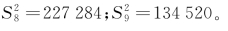
经计算得：1 0803＋6 4803＋8 6403＝9 7203
即：1 259 712 000＋272 097 792 000＋644 972 544 000＝918 330 048 000。
斯潘塞的一个魔三角
吴鹤龄的《幻方与素数》介绍了斯潘塞（Donald D．Spencer）开发的一个魔三角。斯潘塞的构造如下图，这个魔三角中有3个3阶幻方A、B、C 分布在三角形的3条边上，它的令人叫绝处是：
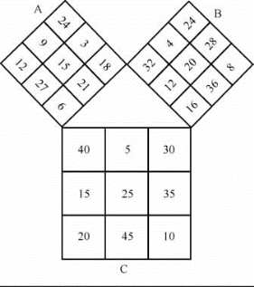
斯潘塞构造的魔三角
（1）C 中任一方格中的数的平方等于A 和B 中相应方格中数的平方之和，例如
402＝242＋322
（2）C 中任意2个或更多个方格中的数的和之平方等于A 相应方格中数的和之平方加B 相应方格中数的和之平方，例如
（40＋5）2＝（24＋3）2＋（32＋4）2
（40＋20＋30）2＝（24＋12＋18）2＋（32＋16＋24）2
（40＋15＋5＋25）2＝（24＋9＋3＋15）2＋（32＋12＋4＋20）2
（3）由此可导出以下结论，即C 中任意行或列或对角线（包括主对角线、折对角线、曲对角线）中数的和之平方，等于A 中相应行或列或对角线中数的和之平方，加上B 中相应行或列或对角线中数的和之平方。
（4）进一步可导出以下结论：C 中所有数的和之平方等于A中所有数的和之平方加上B 中所有数的和之平方。
所有以上这些性质，可以用以下公式表示
C2＝A2＋B2
换句话说，可以把A、B、C 这3个幻方看成是由直角边A 和B 以及斜边C 组成的直角三角形，满足基本关系式C2＝A2＋B2。你说奇妙不奇妙？值得注意的是，这3个幻方中用的数只从1到45，其中只有12，15，20，24这4个数各被用了两次。
我们的工作
对于这类勾股弦幻方组，我们做了如下工作。
构作的3、4、5阶的勾股弦幻方组，不仅满足上述勾股弦幻方组的全部性质，并且每种类型的3个幻方组中没有重复元素。
我们新创出3阶、4阶（全对称幻方性质）、5阶（优化幻方性质）勾股弦幻方组，如下：
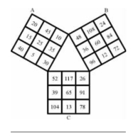
3阶勾股弦幻方组
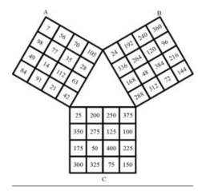
4阶全对称勾股弦幻方组，每行每列及对角线（含折断对角线）上4元素之和都相等
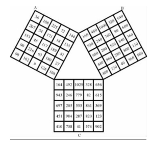
5阶优化勾股弦幻方组，既有全对称幻方的性质，且关于中心对称的两个元素之和相等，称为优化幻方
埃马努伊利兹的勾股弦幻方组
“EE法”是新泽西州肯恩大学计算机科学系教授埃马努埃尔·埃马努伊利兹（Emanuel Emanouilidis）在2005 年介绍的概念。
【定义】如果n 阶幻方A、B、C 满足：
（Aij）2＋（Bij）2＝（Cij）2
则称A、B、C 为EE法勾股弦幻方组。
由于勾股弦幻方组的阶数都相同，又称为“同阶勾股弦幻方组”。这一点与“R法”不同。
下图上部的A，B，C 是满足勾股弦幻方组的3个3阶幻方；再计算出它们各个元素的平方和，如下图下部的（Aij）2，（Bij）2，（Cij）2。
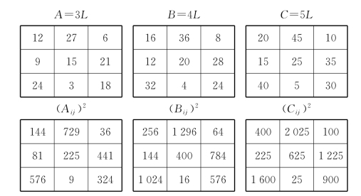
我们再把（Aij）2＋（Bij）2计算出来，如下图。
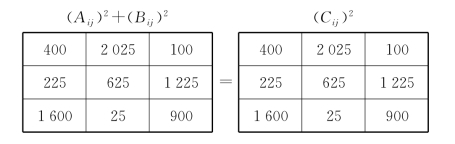
他给出以下定理。
【定理】用EE法可以得到下面的勾股弦幻方组：
步骤1：选择n 阶幻方或乘法幻方M。
步骤2：选择一组勾股弦数组（x，y，z），x＜y＜z。
步骤3：设A ＝x M，B ＝y M，C＝zM。
则A、B、C 为EE型勾股弦幻方组。
例 A、B、C 作为EE型勾股弦幻方组可由下面
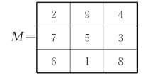
x ＝3，y＝4，z＝5得到。
EE型勾股弦幻方组的拓广
利用EE型勾股弦幻方的构造方法，可以造出4元2次勾股幻方组。例如A2＋B2＋C2＝D2，我们从古老的洛书（3阶幻方，简记为L）中找到两组4元2次（3∶1型）拓广勾股数组：12＋42＋82＝92＝81，22＋32＋62＝72＝49。用这两个数组，分别乘以洛书L 的各个元素，可以构造4个3阶幻方。
当A ＝1，B＝4，C＝8及D＝9时，用L 分别乘以1，4，8，9得到的4个3阶幻方，如下图上部的A，B，C，D，再计算出它们各个元素的平方和，如下图下部的（Aij）2，（Bij）2，（Cij）2，（Dij）2。
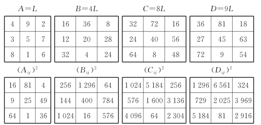
我们再把（Aij）2＋（Bij）2＋（Cij）2计算出来，如下图。
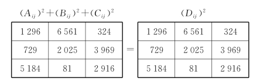
拓广勾股数组，6元2次勾股弦幻方组（4∶2型）
存在（Aij）2＋（Bij）2＋（Cij）2＋（Dij）2＝（Eij）2＋（Fij）2拓广勾股数组。
当A＝4，B＝10，C＝13，D＝14及E＝15，F＝16时，用洛书方阵L 分别乘以4，10，13，14，15，16得到6个3阶幻方，如下图上部的A，B，C，D，E，F；再计算出它们各个元素的平方和如下图下部的（Aij）2，（Bij）2，（Cij）2，（Dij）2，（Eij）2，（Fij）2。
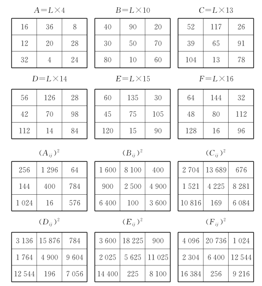
我们再把（Aij）2＋（Bij）2＋（Cij）2＋（Dij）2与（Eij）2＋（Fij）2计算出来，如下图。
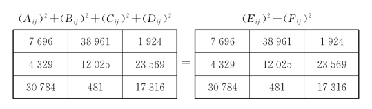
拓广勾股数组，4元3次勾股弦幻方组（3∶1型）
我们可以构造出4元3次勾股数幻方组（3∶1型），首先找到满足3次方勾股数组（Aij）3＋（Bij）3＋（Cij）3＝（Dij）3，也就是说，这3个子幻方任意相同位置上A3＋B3＋C3之和都等于D3。
下面给出用洛书L 分别乘以3、4、5、6与分别乘以1、6、8、9的两个例子。这两个数组33＋43＋53＝63与13＋63＋83＝93来源于中国的洛书，洛书中蕴藏的“珍宝”还多着呢，等待着有兴趣的人撷取和开发！
把3，4，5，6分别乘以L，得到4个3阶幻方如下图上部的A，B，C，D；再计算出它们各个元素的立方和如下图下部的（Aij）3，（Bij）3，（Cij）3，（Dij）3。
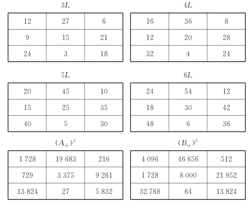
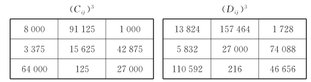
我们再把（Aij）3＋（Bij）3＋（Cij）3计算出来，如下图。
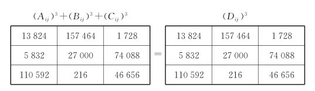
把1，6，8，9分别乘以L，得到4个3阶幻方如下图上部的A，B，C，D；再计算出它们各个元素的立方和如下图下部的（Aij）3，（Bij）3，（Cij）3，（Dij）3。
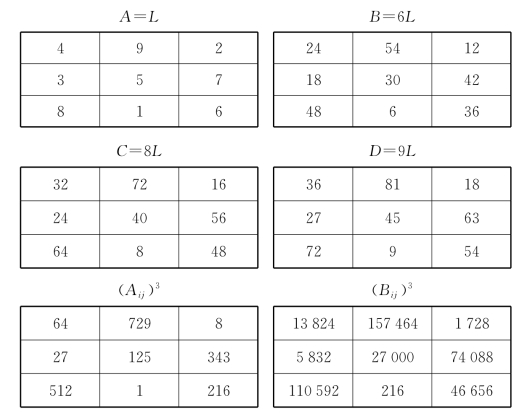
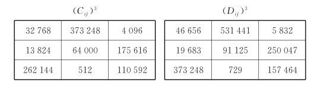
我们再把（Aij）3＋（Bij）3＋（Cij）3计算出来，如下图。
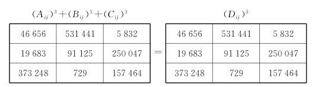
拓广勾股数组，5元3次勾股弦幻方组（4∶1型）
存在数组满足（Aij）3＋（Bij）3＋（Cij）3＋（Dij）3＝（Eij）3，两个满足条件的数组如下：
13＋53＋73＋123＝133；
53＋73＋93＋103＝133。
利用上述数组可以构造出5元3次勾股弦数幻方组（4∶1型），下面给出洛书L 分别乘以1、5、7、12、13及L 分别乘以5、7、9、10、13的两个例子。这两个数组13＋53＋73＋123＝133＝53＋73＋93＋103，结果相同。如下图。
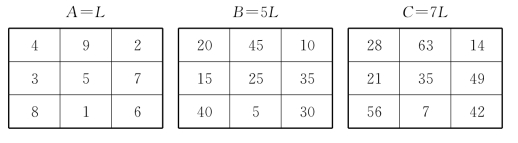
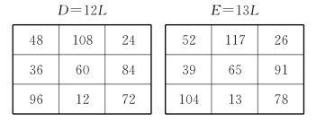
我们把（Aij）3＋（Bij）3＋（Cij）3＋（Dij）3计算出来，如下图左，再把（Eij）3计算出来，如下图右。
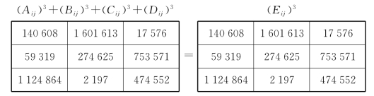
下面是53＋73＋93＋103＝133的例子。
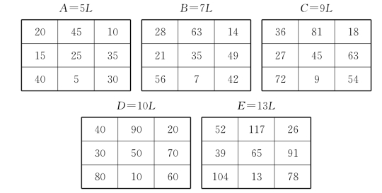
我们把（Aij）3＋（Bij）3＋（Cij）3＋（Dij）3计算出来，如下图左，再把（Eij）3计算出来，如下图右。发现结果是一样的。
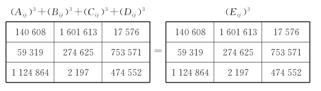
拓广勾股数组，7元5次勾股弦幻方组（6∶1型）
存在（Aij）5＋（Bij）5＋（Cij）5＋（Dij）5＋（Eij）5＋（Fij）5＝（Gij）5，拓广勾股数组
45＋55＋65＋75＋95＋115＝125＝248 832。
下面给出洛书L 分别乘以4、5、6、7、9、11、12的例子，得到7个3阶幻方如下图。
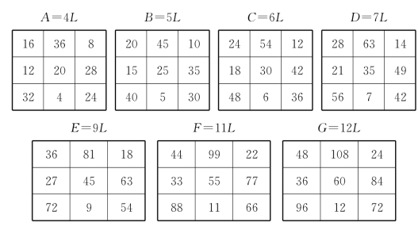
各个子阵幻和的5次方：605＋755＋905＋1055＋1355＋1655＝188 956 800 000＝1805。
把6个子幻方幻和的5次方和计算出来，如下图上，再把（Gij）5计算出来如下图下，发现两个方阵相同。
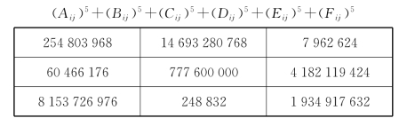
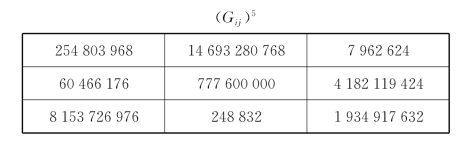
用4阶幻方为基图扩大倍数得到勾股弦幻方组的尝试
前面所讲述的是用3阶幻方为“基图”，乘以勾股数组使得满足勾股幻方的方法，下面我们用4 阶幻方来探讨这个问题。
我们把下图的4阶幻方称为L 阵，用4阶幻方代替原来的3阶幻方。其他步骤同前。
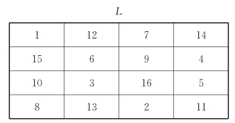
用A＝3，B＝4，C＝5的勾股数组分别乘以上图的4阶幻方L，得到另外3个4阶幻方，如下图。
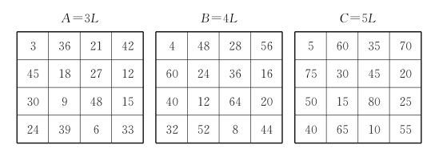
经计算知：（Aij）2＋（Bij）2＝（Cij）2，即：1022＋1362＝1702＝28 900。
我们把（Aij）2＋（Bij）2计算出来，如下图左；再把（Cij）2计算出来，如下图右。
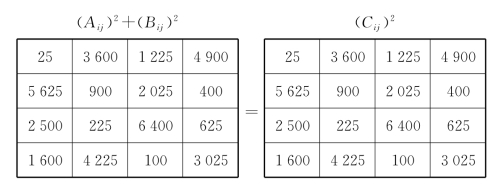
由此，可以猜想用任意相同奇数的幻方作基图，都可以得到勾股弦幻方组。
用4阶幻方构造7元5次勾股弦幻方组（6∶1型）
A5＋B5＋C5＋D5＋E5＋F5＝G5
用A＝4，B＝5，C＝6，D＝7，E＝9，F＝11，G＝12的勾股数组分别乘以上节的4阶幻方L，得到另外7个4阶幻方，如下图。
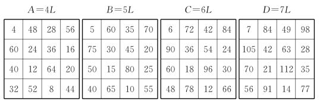
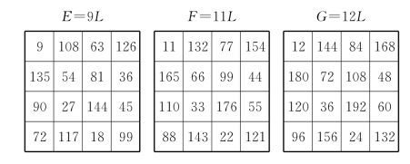
经过计算知：A、B、C、D、E、F 这6个幻方幻和的5次方和等于幻方G 的5次方和。即：1365＋1705＋2045＋2385＋3065＋3745＝4085＝11 305 787 424 768。
我们把（Aij）5＋（Bij）5＋（Cij）5＋（Dij）5＋（Eij）5＋（Fij）5计算出来，如下图上；再把（Gij）5计算出来，如下图下。发现两个方阵相同。
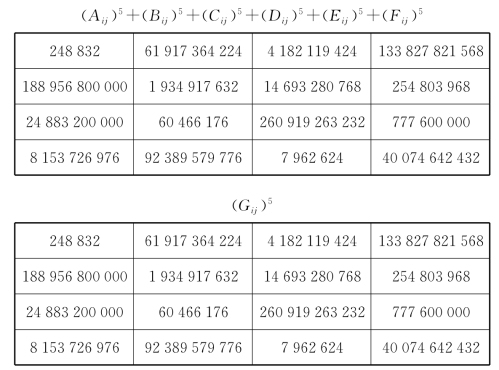
用LL法构造的勾股弦幻方组
用上述两种方法得到的勾股弦幻方组，各自的特点是：“R法”是幻和相同，幻方阶数不相同；“EE法”是幻方的阶数相同，而幻和不相同。
我们另辟蹊径，用“幻方的幻和不相同，幻方的阶数也不相同”的方法得到勾股弦幻方组，称为“LL法”。
【定义1】由自然数A，B，C 构成的数组，并且满足方程：
A2＋B2＝C2
则称A、B、C 为勾股弦数组。
【定义2】如果勾股弦数组的3个元素两两互素，称为“本原勾股弦数组”。
如果将一个本原勾股弦数组的各个元素同时乘以一个相同的数，得到的新勾股弦数组，则称为“倍数勾股弦数组”。
勾股弦数组是一个古老的数学问题，勾股弦数组在测量和计算等方面有广泛的应用，还导致了无理数的重大发现。为此，我们用20个字来颂其功绩：
奇妙勾股弦，天下广流传，成就冠寰宇，万古流芳远！
勾3、股4、弦5幻方组
以下介绍以勾、股、弦数组为阶次的3个幻方。这3个幻方的阶次是勾股弦数组，并且它们的幻和也是勾股弦数组。
【定义】由A2＋B2＋C2个自然数构成的A 阶、B 阶与C 阶幻方，它们的幻和分别记作SA、SB、SC。如果A、B、C 是勾股弦数组，即A2＋B2＝C2。并且满足：
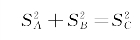
则称这3个幻方为“勾股弦幻方组”。
下图是一个勾股弦幻方组。
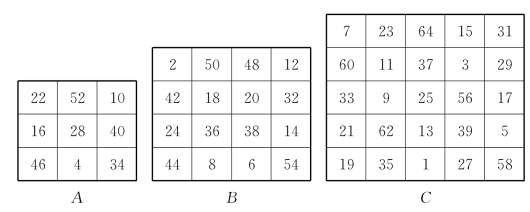
上图A、B、C 的3个幻方是一组“勾股弦幻方组”，其“幻和”分别为S3＝84，S4＝112，S5＝140。它们的阶次3、4、5是一个勾股弦数组；它们幻和的平方和是：
842＋1122＝1402，
也是一个勾股弦数组。所以A、B、C 是勾股弦幻方组。
其中：
①3阶幻方具有雪花幻方的性质。
②4阶幻方与5阶幻方都具有全对称幻方的性质。即每行、每列及各条对角线（包括折断对角线）上的n 个元素之和都等于定值。
③3阶幻方与4阶幻方全部由偶数所组成。
④在5阶幻方中仅仅使用了56、58、60、62、64这5个偶数，其余全部是奇数。
对于勾股弦幻方组，我们得到下面的结果：
1．不存在由连续自然数构成的“本原勾股弦幻方组”；
2．存在由连续自然数构成的“倍数勾股弦数组（A、B、C 为本原数组的偶数倍）”阶次的幻方。
倍数勾股弦数组勾6、股8、弦10幻方组
下面我们给出由连续自然数1，2，…，200构作的A＝6，B＝8，C＝10的勾股弦幻方组，依次见下图。其中A 是一个分层幻方，内心（粗实线所围）是一个4阶全对称幻方，整体是一个6阶幻方。C也是一个分层幻方，内心（粗实线所围）的8×8方阵与B 阵是一对“8阶同值平方幻方”。
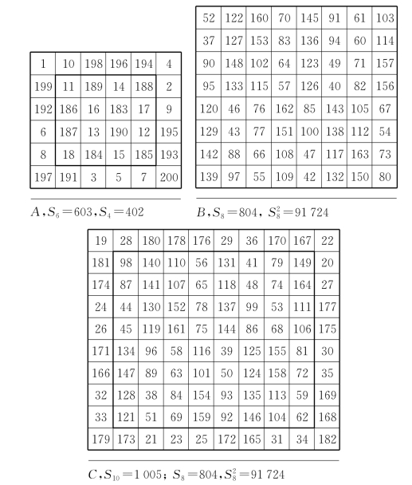
62＋82＝102，6032＋8042＝1 0052。
对于勾股弦幻方组元素的选择，有很多种方法，请读者自己发掘。如果找到新的元素，构造出新的勾股弦幻方组，将使您忘记疲劳和烦恼，而带来无穷的乐趣！
勾股弦数组的拓广：A3、B4、C5、D6 幻方组
在洛书中，有一组勾股弦数组，即32＋42＝52。我们把它称为3元数组，因为该数组共有3个元素。
另有3次幂和相等的4元数组，即：33＋43＋53＝63。我们称为“拓广勾股弦数组”。
下面我们讨论4元幻方组。
下图是A ＝3、B ＝4、C＝5、D ＝6的拓广勾股弦幻方组。
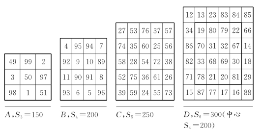
各个幻方幻和的3次方之和，即1503＋2003＋2503＝3003＝27 000 000。
我们可以造出由连续自然数1—344组成的6、8、10、12阶幻方组（下图A，B，C，D）。
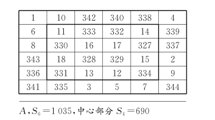
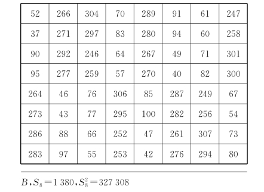
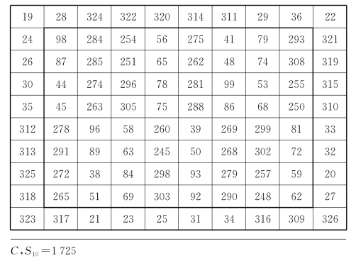
图中C 的中心部分（粗实线所围的）是一个8阶幻方平方幻方，其1次、2次幻和与图B 相同，对于这类幻方，我们称为“同值平方幻方”。
真是：同值幻方妙趣无穷，幻和相等模样相同，数理蕴藏左右对称，谁大谁小难分伯仲。
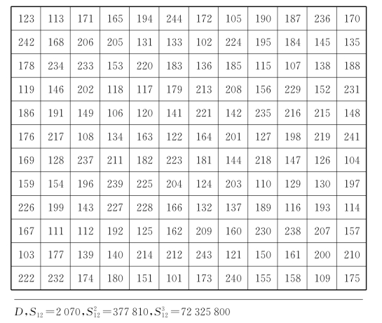
D 的幻方由连续自然数101—244构成。其两条对角线上的
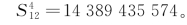
各个幻方幻和的3次方之和，即1 0353＋1 3803＋1 7253＝2 0703＝8 869 743 000。构造勾股弦幻方组的三种方法大荟萃
如上所述，有3种方法可以造出勾股弦幻方组。笔者提议构造一组勾股弦幻方组——使它们的幻和等于2 016，或者与2 016有关联以示纪念。这3种方法都可以造出其幻和等于2 016的年份，倘若错过2 016这个年份，必须再等12年才能符合这个条件。12年，对于年轻朋友来说只是瞬间而已，但对于我们老年人来说，是非常漫长和艰辛的，甚至是不可能的。但我们渴望再造几次与年份有关的勾股弦幻方组……
第一种方法，R 法。下面是用第一种R 法，造出幻和等于2 016的3个幻方，如下图。
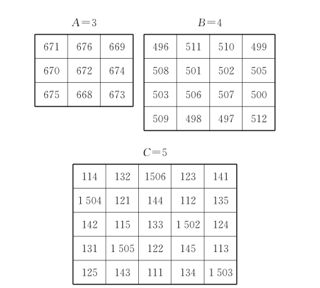
验算：6 0482＋8 0642＝10 0802＝36 578 304＋65 028 096＝101 606 400，正确。
第二种方法：EE法。构造3个5阶幻方，如下图，使它们的幻和之和等于2 016（把原来3阶或4阶拓广到5阶），用3个5阶幻方分别满足勾股弦幻方组。
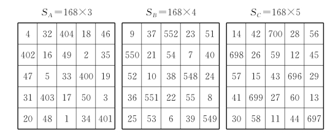
上面3个幻方的幻和分别用SA、SB、SC 来表示，幻和之和＝SA＋SB＋SC，即：504＋672＋840＝2 016。
这3个5阶幻方的平方和满足勾股弦幻方组的关系：
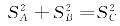
，即5042＋6722＝8402＝254 016＋451 584＝705 600。3个子幻方的25个元素之和分别等于504×5＝2 520，672×5＝3 360，840×5＝4 200，它们也满足勾股弦幻方组的性质，即：
2 5202＋3 3602＝4 2002＝6 350 400＋11 289 600
＝17 640 000
第三种方法：LL法。在富兰克林（B．Franklin）诞辰310周年（1706—2016）之际，笔者提议设计一个“纪念富兰克林诞辰310周年幻方”，来纪念这位身兼多职的著名科学家。
富兰克林幻方是迄今为止奇妙性质最多的幻方。《有趣的数论》一书（奥尔著，潘承彪译，北京大学出版社）称之为“最神奇的幻方”而享誉国际，开“曲线幻方”研究之先河，深受幻方爱好者所崇敬。
在这里，我们用LL法设计一组（3个）幻方其幻和之和等于2 112的勾股弦幻方组来等待“勾股弦幻方组”3种构造方法96周年的到来，2 112是一个回文数，颇有意义。3个幻方如下图之A、B、C：
在上面3个幻方中，528＋704＋880＝2 112。
幻方的阶数：32＋42＝52＝25；
幻和的平方和：即：
5282＋7042＝8802＝278 784＋495 616＝774 400。
对幻方远景展望
勾股弦幻方组的问世给幻方家族增添了新成员，增加了活力，丰富了幻方的研究内容。在构造勾股弦幻方组中，我们应用了多种方法（具体见文献），例如：洛书法、方阵定位法、直接书写法、分层法、平方幻方法、同值平方幻方法等。有兴趣的读者不妨解剖一下各个幻方，希望得到更好的结果。此文仅仅是引玉之砖，但愿经过幻友的努力增加更多的新品种，例如勾股弦幻圆、勾股弦幻立方体、勾股弦幻球，等等。
俗话说：人生不满百，总为千岁忧。
到了2112年，要想造出新幻方，就更加轻松。由现在的“举手”之劳，将变成“开口”之劳，只要对计算机“说”出要求，一切由“高智能计算机”来完成，哪里还用得着“拨打算盘珠子”呢！
不过，即便是到了3000年，也有计算机难以解决的幻方问题。就现在的计算机而言，仅仅是解决了“k＝1、2次幂和幻方”的构造问题。也有人用计算机搜索的方法得到了连作者自己也“不会构造”的高次幂和幻方，但对于k＞20的幂和幻方尚未出现。即便解决了k＞20的幂和幻方问题，在数字海洋里也不过是沧海一粟而已。并且，目前的计算机对于双重幻方尚无能为力，如果给双重幻方再加上一个幂和幻方的条件——即“k 次幂和积幻方”（k＝1，2，3…），更是“太平洋里捞针”了。